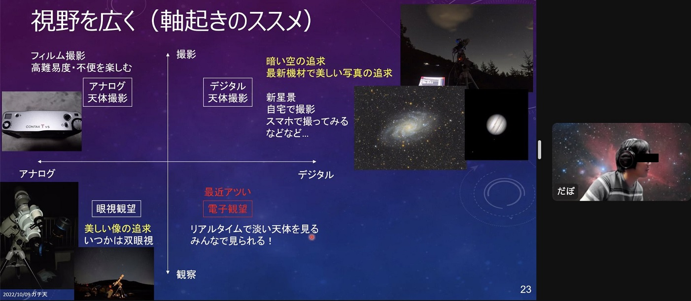

<!DOCTYPE html>
<html>

<head><meta name="generator" content="Hexo 3.8.0">
  <meta charset="utf-8">
  
    <title>
      
        天リフ超会議「ガチ天2022」に出演しました | 
            ほしよみ大学生のブログ
    </title>
    <meta name="viewport" content="width=device-width">
    <meta name="description" content="ガチ天に出演今月頭に Youtube 上で配信されました 天リフ超会議拡大版「ガチ天2022」2日目に出演してきました．">
<meta name="keywords" content="天体写真,その他">
<meta property="og:type" content="article">
<meta property="og:title" content="天リフ超会議「ガチ天2022」に出演しました">
<meta property="og:url" content="http://dabokun.github.io/2022/10/28/00000067-gachiten2022/index.html">
<meta property="og:site_name" content="ほしよみ大学生のブログ">
<meta property="og:description" content="ガチ天に出演今月頭に Youtube 上で配信されました 天リフ超会議拡大版「ガチ天2022」2日目に出演してきました．">
<meta property="og:locale" content="ja">
<meta property="og:image" content="http://dabokun.github.io/2022/10/28/00000067-gachiten2022/card.jpg">
<meta property="og:updated_time" content="2022-10-28T15:37:59.018Z">
<meta name="twitter:card" content="summary_large_image">
<meta name="twitter:title" content="天リフ超会議「ガチ天2022」に出演しました">
<meta name="twitter:description" content="ガチ天に出演今月頭に Youtube 上で配信されました 天リフ超会議拡大版「ガチ天2022」2日目に出演してきました．">
<meta name="twitter:image" content="http://dabokun.github.io/2022/10/28/00000067-gachiten2022/card.jpg">
<meta name="twitter:creator" content="@astrodabo">
      
        <link rel="alternative" href="/atom.xml" title="ほしよみ大学生のブログ" type="application/atom+xml">
        
          
            <link rel="icon" href="/images/favicon.png">
            
              <link rel="stylesheet" href="/css/style.css">
                <!--[if lt IE 9]><script src="//html5shiv.googlecode.com/svn/trunk/html5.js"></script><![endif]-->
                
                  <script data-ad-client="ca-pub-1350688970555904" async src="https://pagead2.googlesyndication.com/pagead/js/adsbygoogle.js"></script>
</head></html>
<body>
  <div id="container">
    <div class="mobile-nav-panel">
	<i class="icon-reorder icon-large"></i>
</div>
<header id="header">
	<h1 class="blog-title">
		<a href="/">
			ほしよみ大学生のブログ
		</a>
	</h1>
	<nav class="nav">
		<ul>
			
				<li><a href="/">
						Home
					</a></li>
				
				<li><a href="/categories">
						Categories
					</a></li>
				
				<li><a href="/tags">
						Tags
					</a></li>
				
				<li><a href="/archives">
						Archives
					</a></li>
				
				<li><a href="/about">
						About
					</a></li>
				
				<li><a href="/work">
						Work
					</a></li>
				
					<li><a id="nav-search-btn" class="nav-icon" title="Search"></a></li>
					<li><a href="https://github.com/dabokun"></a>
					</li>
					<li><a href="https://twitter.com/astrodabo"></a></li>
					
						<li><a href="/atom.xml" id="nav-rss-link" class="nav-icon" title="RSS Feed"></a>
						</li>
						
		</ul>
	</nav>
	<div id="search-form-wrap">
		<form action="//google.com/search" method="get" accept-charset="UTF-8" class="search-form"><input type="search" name="q" class="search-form-input" placeholder="Search"><button type="submit" class="search-form-submit">&#xF002;</button><input type="hidden" name="sitesearch" value="http://dabokun.github.io"></form>
	</div>
</header>

    <div id="main">
      <article id="post-00000067-gachiten2022" class="post">
	<footer class="entry-meta-header">
		<span class="meta-elements date">
			<a href="/2022/10/28/00000067-gachiten2022/" class="article-date">
  <time datetime="2022-10-28T07:59:13.000Z" itemprop="datePublished">2022-10-28</time>
</a>
		</span>
		<span class="meta-elements author">astr0dab0</span>
		<div class="commentscount">
			
			<a href="http://dabokun.github.io/2022/10/28/00000067-gachiten2022/#disqus_thread" class="article-comment-link">Comments</a>
			
		</div>
	</footer>
	
	<header class="entry-header">
		
  
    <h1 class="article-title entry-title" itemprop="name">
      天リフ超会議「ガチ天2022」に出演しました
    </h1>
  

	</header>
	<div class="entry-content">
		
		
		<div id="toc" class="toc-article">
			<p class="toc-title">目次</p>
			<ol class="toc"><li class="toc-item toc-level-3"><a class="toc-link" href="#ガチ天に出演"><span class="toc-number">1.</span> <span class="toc-text">ガチ天に出演</span></a></li></ol>
		</div>
		
		<h3 id="ガチ天に出演"><a href="#ガチ天に出演" class="headerlink" title="ガチ天に出演"></a>ガチ天に出演</h3><p>今月頭に Youtube 上で配信されました 天リフ超会議拡大版「ガチ天2022」2日目に出演してきました．</p>
<div class="video-container"><iframe src="//www.youtube.com/embed/55yLCvr47mM" frameborder="0" allowfullscreen></iframe></div>
<a id="more"></a>
<p>以下に私のパートのアーカイブも公開されていますので未視聴の方はぜひ笑．</p>
<div class="video-container"><iframe src="//www.youtube.com/embed/8cLKa4sQOqk" frameborder="0" allowfullscreen></iframe></div>
<p>以前自分の撮った写真を紹介する天リフさんの生配信で数分お話させてもらったことはあるのですが，今回は20分程度トークしました．<br>お題は「1人1人の『ガチ天』に向き合う態度」ということで，なかなか難しいテーマです．自分の態度を語るとなると自分語りは避けられません．前回のトーク時のアンケートで「自分語りばっかじゃねぇか」みたいなコメントがあったのを私は覚えています()．かといって自分の態度くらいしか語ることがないのもまた事実なので，なんとか自分の話は半分程度にとどめつつ，残り半分でテイクホームメッセージのある内容を話せればいいかなと考えました．<br>構成としては，前半に自分の研究の話をし（よく「何の研究をしてるんですか？」と聞かれて私が答えに詰まることがある），後半は天体写真に向き合う態度のなかで，自分が普段考えていることを主に話させていただきました．<br>特に「視野を広げる」「軸をおいて考えてみる」の2点は大事で，どちらも研究を数年続けて得た態度なのかなと思います．軸を置いて関連研究をプロットすると，どこに穴があるのか見えてくる＝新規性を発見するということに繋がるわけですね．もちろん，他にも軸がないかというのを探してみたり，相関性のある軸を選ぶと意味がないので（プロットした時に直線で並んだら相関性のある軸をとっていないか疑いましょう），ちゃんと独立した軸を選んでいるのかを検証しながら考えていくことも重要になってきます．</p>
<p></p>
<p>（「軸起き」ではなく「軸置き」です…一晩で作ったクオリティなのがバレます）</p>
<p>以下アンケートでいただいたコメントです．</p>
<blockquote>
<p>視野がぱっと開くような感じのお話でした。ありがとうございました。近い将来、天文写真の一分野とか自然現象を、観測データセットをVRゴーグルで自由に3次元インタラクティブ視（プラス動画要素も入れて）して楽しむようになるかもしれないなーなどど妄想いたしました。</p>
</blockquote>
<p>VR も楽しいですが、AR でリアルタイムの星空に情報を投影できるようになると絶対楽しいだろうなあと私も考えています．最近発売されたアストロイドなんかも天文×AR の先駆けになりそうですよね．</p>
<blockquote>
<p>何事も研究者の視点ですね。思考の仕方がとても興味深かったです。</p>
</blockquote>
<p>伝わる人には伝わったようで安心しました．</p>
<p>直接アンケート結果のフォームを見たわけではなく天リフさんから教えていただいたので，ネガティブなものはもしかしたらフィルターされていたりするのかもしれませんが，とにかくフィードバックをいただけると励みになります．<br>天リフさん，見ていただいた方，コメントいただいた方，どうもありがとうございました．また機会がありましたら参加してみようと思います．<br>それでは！</p>

		
	</div>
	<footer class="article-footer">
		<a href="https://twitter.com/intent/tweet?text=%E5%A4%A9%E3%83%AA%E3%83%95%E8%B6%85%E4%BC%9A%E8%AD%B0%E3%80%8C%E3%82%AC%E3%83%81%E5%A4%A92022%E3%80%8D%E3%81%AB%E5%87%BA%E6%BC%94%E3%81%97%E3%81%BE%E3%81%97%E3%81%9F｜%E3%81%BB%E3%81%97%E3%82%88%E3%81%BF%E5%A4%A7%E5%AD%A6%E7%94%9F%E3%81%AE%E3%83%96%E3%83%AD%E3%82%B0&url=http://dabokun.github.io/2022/10/28/00000067-gachiten2022/" class="twitter-share-button" target="_blank" title="Twitter"></a>
		<script async src="https://platform.twitter.com/widgets.js" charset="utf-8"></script>

		<div id="fb-root"></div>
		<script async defer crossorigin="anonymous" src="https://connect.facebook.net/ja_JP/sdk.js#xfbml=1&version=v4.0"></script>
		<div class="fb-share-button" data-href="http://dabokun.github.io/2022/10/28/00000067-gachiten2022/" data-layout="button_count" data-size="small"><a target="_blank" href="https://www.facebook.com/sharer/sharer.php?u=https%3A%2F%2Fdabokun.github.io%2F&amp;src=sdkpreparse" class="fb-xfbml-parse-ignore">シェア</a></div>
	</footer>
	<footer class="entry-footer">
		<div class="entry-meta-footer">
			<span class="category">
				
  <div class="article-category">
    <a class="article-category-link" href="/categories/others/">その他</a>
  </div>

			</span>
			<span class=" tags">
				
  <ul class="article-tag-list"><li class="article-tag-list-item"><a class="article-tag-list-link" href="/tags/others/">その他</a></li><li class="article-tag-list-item"><a class="article-tag-list-link" href="/tags/astrophotography/">天体写真</a></li></ul>

			</span>
		</div>
	</footer>
	
	
<nav id="article-nav">
  
    <a href="/2022/10/30/00000068-asagiri-akagi/" id="article-nav-newer" class="article-nav-link-wrap">
      <strong class="article-nav-caption">Newer</strong>
      <div class="article-nav-title">
        
          10月後半遠征
        
      </div>
    </a>
  
  
    <a href="/2022/10/04/00000066-2022-09-10/" id="article-nav-older" class="article-nav-link-wrap">
      <strong class="article-nav-caption">Older</strong>
      <div class="article-nav-title">
        
          9月しらびそ，10月前半五合目
        
      </div>
    </a>
  
</nav>

	
</article>


<section id="comments">
	<div id="disqus_thread">
		<noscript>Please enable JavaScript to view the <a href="//disqus.com/?ref_noscript">comments powered by
				Disqus.</a></noscript>
	</div>
</section>

    </div>
    <div class="mb-search">
  <form action="//google.com/search" method="get" accept-charset="utf-8">
    <input type="search" name="q" results="0" placeholder="Search">
    <input type="hidden" name="q" value="site:dabokun.github.io">
  </form>
</div>
<footer id="footer">
	<h1 class="footer-blog-title">
		<a href="/">ほしよみ大学生のブログ</a>
	</h1>
	<span class="copyright">
		&copy; 2022 astr0dab0<br>
		Modify from <a href="http://sanographix.github.io/tumblr/apollo/" target="_blank">Apollo</a> theme, designed by <a href="http://www.sanographix.net/" target="_blank">SANOGRAPHIX.NET</a><br>
		Powered by <a href="http://hexo.io/" target="_blank">Hexo</a>
	</span>
</footer>
    
<script>
  var disqus_shortname = 'astr0dab0';
  
  var disqus_url = 'http://dabokun.github.io/2022/10/28/00000067-gachiten2022/';
  
  (function(){
    var dsq = document.createElement('script');
    dsq.type = 'text/javascript';
    dsq.async = true;
    dsq.src = '//go.disqus.com/embed.js';
    (document.getElementsByTagName('head')[0] || document.getElementsByTagName('body')[0]).appendChild(dsq);
  })();
</script>


<script src="//ajax.googleapis.com/ajax/libs/jquery/2.0.3/jquery.min.js"></script>


<link rel="stylesheet" href="/fancybox/jquery.fancybox.css" media="screen" type="text/css">
<script src="/fancybox/jquery.fancybox.pack.js"></script>


<script src="/js/script.js"></script>
  </div>
</body>
</html>